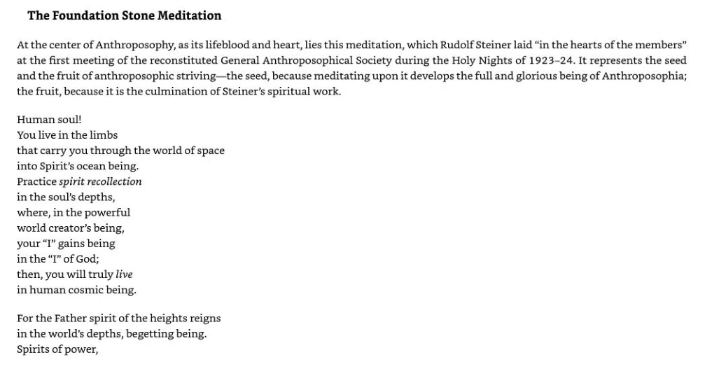
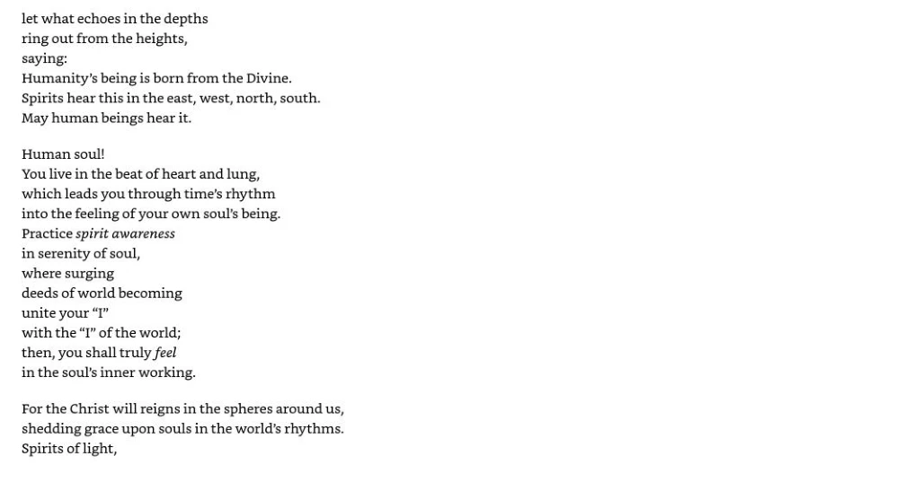
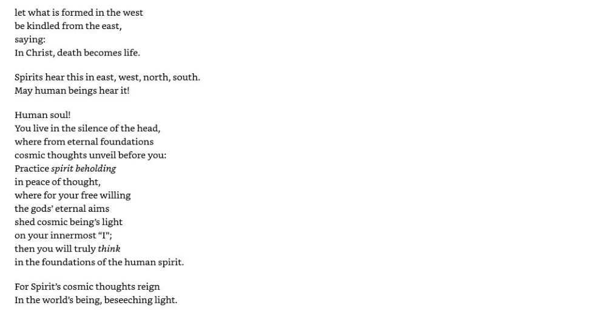
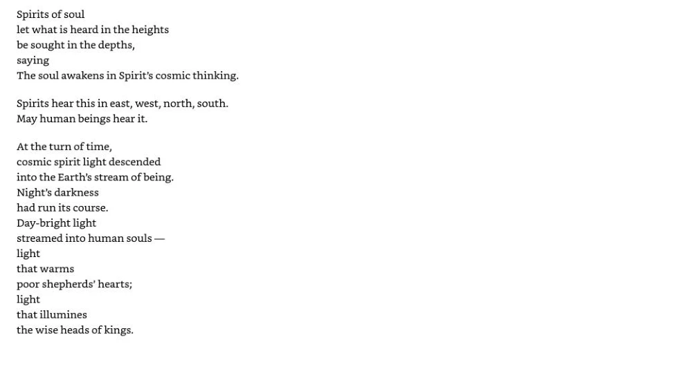
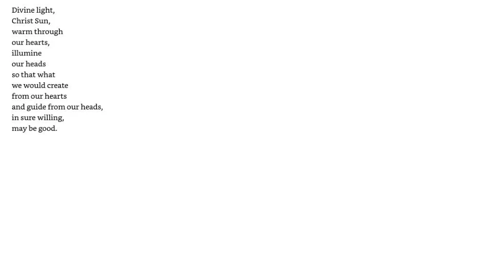

← Start Now! — Meditação e exercícios espirituais
A meditação da Pedra Fundamental
Aprenda o capítulo pelas suas lições e compare as passagens correspondentes.
PDF 272–276 · 1 lições de ensino
A Pedra Fundamental como integração
Relacione a meditação inteira aos caminhos do livro.
Textos de prática e leitor da fonte
Estas são páginas selecionadas do capítulo, incluindo textos longos de prática. A página inglesa original é referência para palavras ou disposição incertas. O OCR pode conter erros e não é nova edição verificada. Abra a imagem em tamanho integral para os detalhes.
Posição no PDF 272 · Inglês
Abra a página original em tamanho integral


Leia a transcrição pesquisável
The Foundation Stone Meditation
At the center of Anthroposophy, as its lifeblood and heart, lies this meditation, which Rudolf Steiner laid “in the hearts of the members” at the first meeting of the reconstituted General Anthroposophical Society during the Holy Nights of 1923-24. It represents the seed and the fruit of anthroposophic striving—the seed, because meditating upon it develops the full and glorious being of Anthroposophia; the fruit, because it is the culmination of Steiner’s spiritual work.
Human soul!
You live in the limbs
that carry you through the world of space into Spirit’s ocean being. Practice spirit recollection in the soul's depths, where, in the powerful world creator’s being, your “I” gains being
in the “I” of God;
then, you will truly live in human cosmic being.
For the Father spirit of the heights reigns in the world’s depths, begetting being. Spirits of power,Posição no PDF 273 · Inglês
Abra a página original em tamanho integral


Leia a transcrição pesquisável
let what echoes in the depths
ring out from the heights,
saying:
Humanity’s being is born from the Divine. Spirits hear this in the east, west, north, south. May human beings hear it.
Human soul!
You live in the beat of heart and lung, which leads you through time's rhythm into the feeling of your own soul's being. Practice spirit awareness
in serenity of soul,
where surging
deeds of world becoming
unite your “I”
with the “I” of the world;
then, you shall truly feel
in the soul's inner working.
For the Christ will reigns in the spheres around us, shedding grace upon souls in the world’s rhythms. Spirits of light,Posição no PDF 274 · Inglês
Abra a página original em tamanho integral


Leia a transcrição pesquisável
let what is formed in the west
be kindled from the east, saying:
In Christ, death becomes life.
Spirits hear this in east, west, north, south. May human beings hear it!
Human soul!
You live in the silence of the head, where from eternal foundations
cosmic thoughts unveil before you: Practice spirit beholding
in peace of thought,
where for your free willing
the gods’ eternal aims
shed cosmic being’s light
on your innermost “I”;
then you will truly think
in the foundations of the human spirit.
For Spirit’s cosmic thoughts reign In the world’s being, beseeching light.Posição no PDF 275 · Inglês
Abra a página original em tamanho integral


Leia a transcrição pesquisável
Spirits of soul
let what is heard in the heights
be sought in the depths,
saying
The soul awakens in Spirit’s cosmic thinking.
Spirits hear this in east, west, north, south. May human beings hear it.
At the turn of time,
cosmic spirit light descended into the Earth's stream of being. Night’s darkness
had run its course.
Day-bright light
streamed into human souls —
light
that warms
poor shepherds’ hearts;
light
that illumines
the wise heads of kings.Posição no PDF 276 · Inglês
Abra a página original em tamanho integral


Leia a transcrição pesquisável
Divine light, Christ Sun, warm through our hearts, illumine
our heads
so that what
we would create
from our hearts
and guide from our heads, in sure willing, may be good.